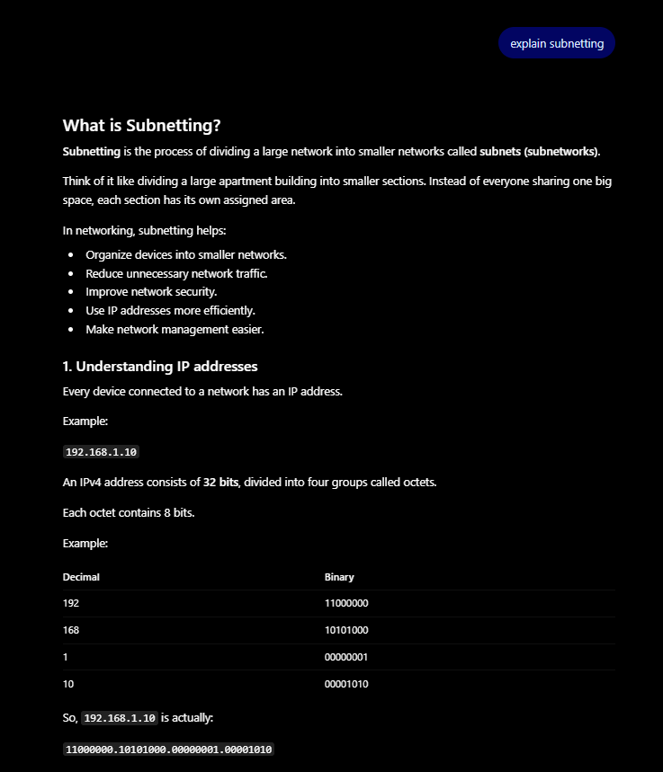
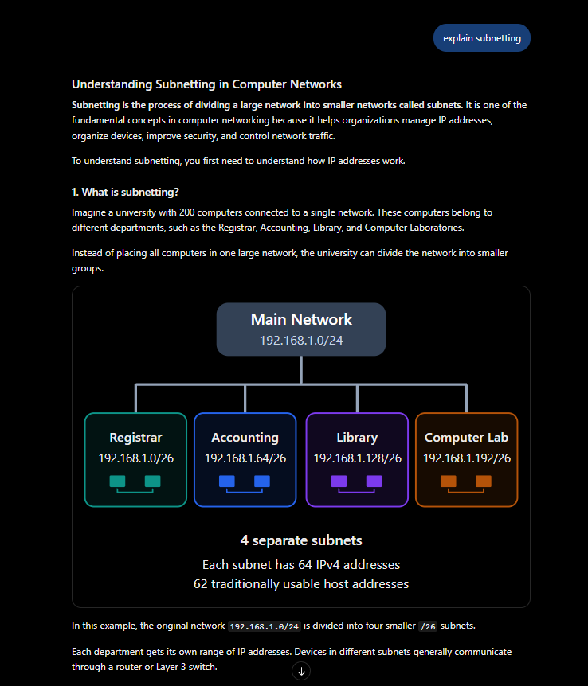
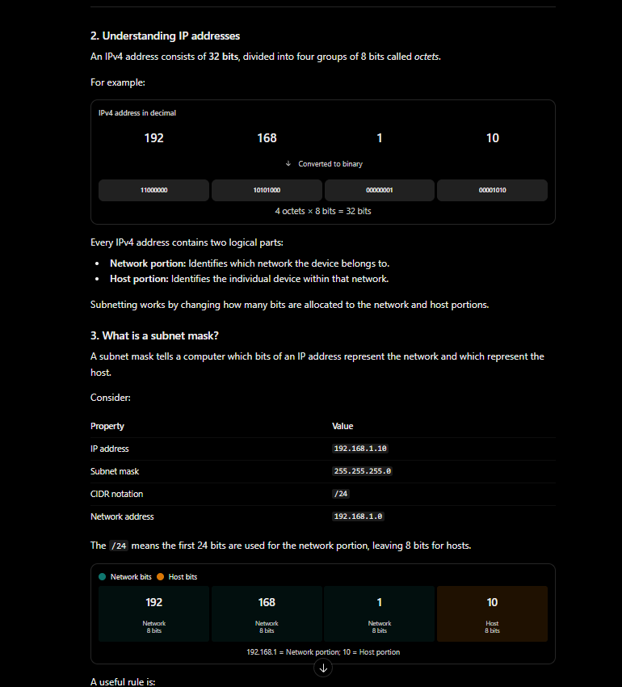

Activity 01
Personalizing ChatGPT
Can the same question produce an explanation that better fits how I learn?
What I tried
Using a structured interview prompt provided by my professor, I answered questions about how I use ChatGPT and how I prefer to learn. I then asked the same question with and without the resulting personalization.
“Start with why something exists, then explain how it works using relevant analogies and practical examples.”
explain subnetting
Compare the responses
Without personalization
Starts with an apartment-building analogy and a list of benefits. It then uses a table to show how each part of an IP address converts to binary.


Open baseline screenshotWith personalization
Starts with a university network and shows one /24 network split into four /26 subnets. A second visual shows which bits identify the network and which identify the host.


Open personalized screenshotSee the IP address and subnet mask example


Open subnet mask screenshotThe screenshots show excerpts of the two ChatGPT responses.
What this showed
Both answers explained the idea. The university example carried it further by showing how a network could actually be divided. That made the personalized response a closer match for my preference to start with the big picture and follow it with a practical example.